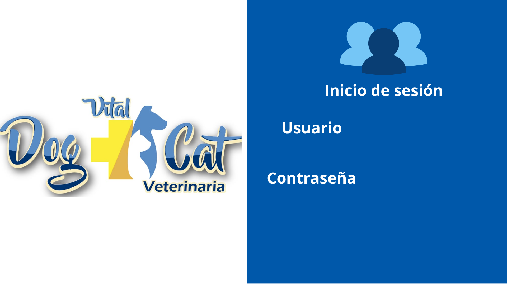

Inventario
Consulte productos, existencias, proveedores y fechas de vencimiento.
VER PRODUCTOSUn sistema para gestionar el inventario y las ventas de la veterinaria, con atención al bienestar animal.
Apoyar la gestión de productos, inventario, ventas, usuarios, proveedores y reportes de Vital Dog Cat.
Consulte productos, existencias, proveedores y fechas de vencimiento.
VER PRODUCTOSConsulte los usuarios y los roles de administrador y empleado.
USUARIOSConsulte los nombres, teléfonos y empresas de los proveedores.
PROVEEDORES